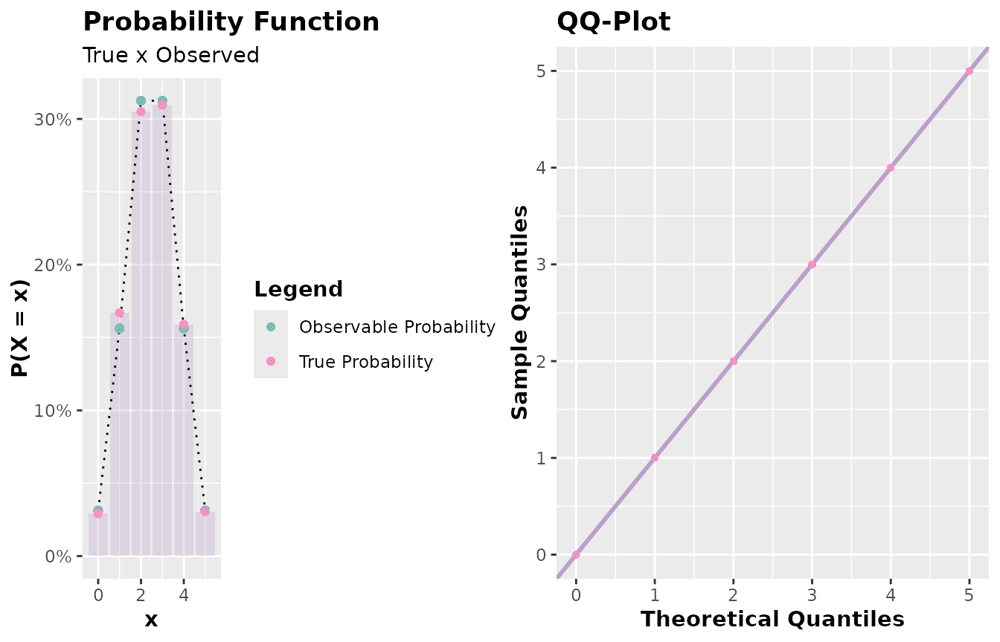
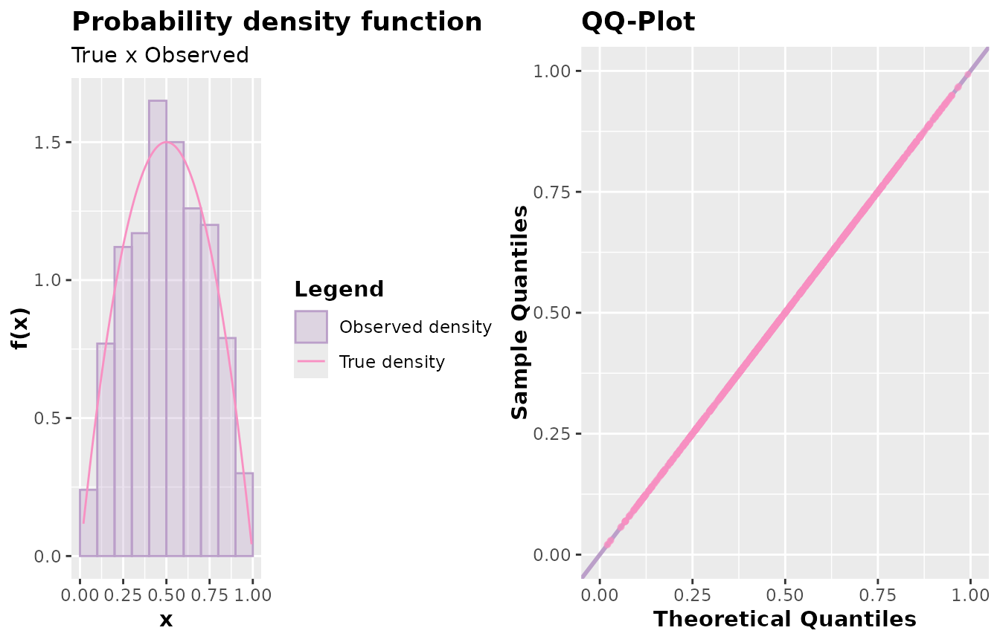

Quantile-Quantile Plot
The package AcceptReject provides the function
qqplot.accept_reject() which allows us to construct
quantile-quantile plots to assess the goodness of fit of a probability
distribution to a data sample. Similar to the function
plot.accept_reject(), the function
qqplot.accept_reject() is a generic function that accepts
an object of class accept_reject as an argument, easily constructing the
plot of theoretical quantiles of f against the sample quantiles
(observed quantiles).
This function works efficiently, so that in large samples, the points
are optimized to generate a more efficient plot, utilizing the scattermore
library in R.
General usage format:
## S3 method for class 'accept_reject'
qqplot(
x,
alpha = 0.5,
color_points = "#F890C2",
color_line = "#BB9FC9",
size_points = 1,
size_line = 1,
...
)-
x: Object of the class accept_reject returned by the functionaccept_reject(). -
alpha: Transparency of the points and reference line representing where the quantiles should be (theoretical quantiles). -
color_points: Color of the points (default is"#F890C2"). -
color_line: Color of the reference line (detault is"#BB9FC9"). -
size_points: Size of the points (default is1). -
size_line: Thickness of the reference line (default is1). -
...: Additional arguments for thequantile()function. For instance, it’s possible to change the algorithm type for quantile calculation.
Examples
Discrete case
library(AcceptReject)
#>
#> Attaching package: 'AcceptReject'
#> The following object is masked from 'package:stats':
#>
#> qqplot
library(cowplot)
x <- accept_reject(
n = 2000L,
f = dbinom,
continuous = FALSE,
args_f = list(size = 5, prob = 0.5),
xlim = c(0, 5)
)
#> ! Warning: f(5) is 0.03125. If f is defined for x >= 5, trying a upper limit might be better.
a <- plot(x)
b <- qqplot(x)
plot_grid(a, b, ncol = 2)
Continuous case
# For n = 1000
y <- accept_reject(
n = 1000L,
f = dbeta,
continuous = TRUE,
args_f = list(shape1 = 2, shape2 = 2),
xlim = c(0, 1)
)
# For many points (scattermore is used):
z <- accept_reject(
n = 11e3,
f = dbeta,
continuous = TRUE,
args_f = list(shape1 = 2, shape2 = 2),
xlim = c(0, 1)
)
# Gráficos
a <- plot(y)
b <- qqplot(y)
c <- plot(z)
d <- qqplot(z)
plot_grid(a, b, ncol = 2)
plot_grid(c, d, ncol = 2)